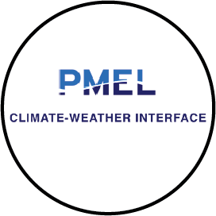

Projects
Current projects:
Coordinated Uncrewed System
Observations
Observations
Diagnostic Technique for
Improved MJO Prediction
Improved MJO Prediction
Observing Systems
Research Studies
Research Studies

Saildrone Observations
Wildfire Management
Years of the Maritime
Continent (YMC)
Continent (YMC)
Past projects:
Arctic Surface Fluxes
Precipitation Ensemble
Prediction of the US
Northwest
Prediction of the US
Northwest
